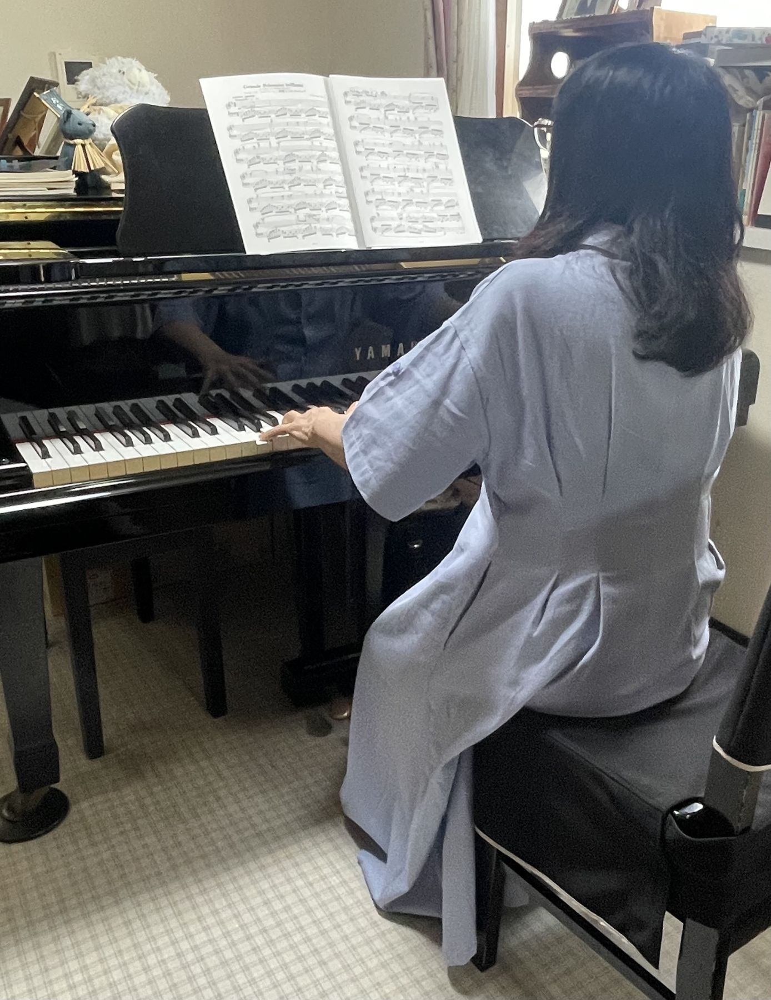
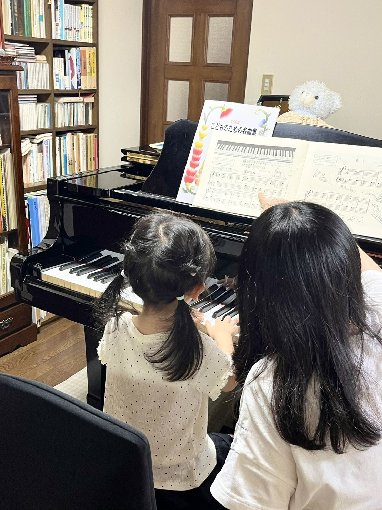
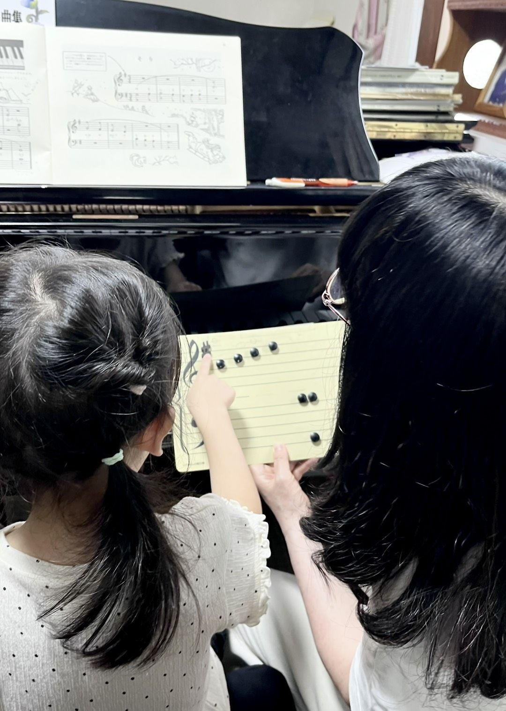

Piano & Vocal Lessons — Tokushima
基礎から楽しく、
ひとりひとりの
個性を大切に。
徳島市の個人レッスン。子どもから大人まで。
専門的に学びたい方も、60代で初心者の方も、
音楽が苦手なお子さんも。


About
谷中ピアノ音楽教室について
谷中ピアノ音楽教室は、基礎から楽しく学べる個人レッスンの教室です。幼児からシニアの方まで、個性を大切に丁寧に指導いたします。
専門的に学びたい方はもちろん、60代で初心者の方や、音楽が苦手なお子さんも指導しています。

Lessons
指導内容
- 壱ピアノ基礎から、それぞれの目標に合わせて。
- 弐声楽声の出し方から、歌う楽しさまで。
- 参ソルフェージュ読む力・聴く力を育てます。
- 肆楽典音楽のしくみを理解します。
発表会：1年に1回（ご希望の方）
Instructor
谷中 亨子たになか きょうこ
音楽がそれぞれの人生の彩りの一つとなる
お手伝いができればと思っています。
- 武蔵野音楽大学 卒業
- 鳴門教育大学大学院（音楽教育）修士課程 修了
Fee
料金
入会金はありません。回数・時間などはご相談に応じます。
子どもコース
6,000円から30分 × 月4回大人コース
6,000円から30分 × 月4回体験レッスン
1,000円お気軽にどうぞ